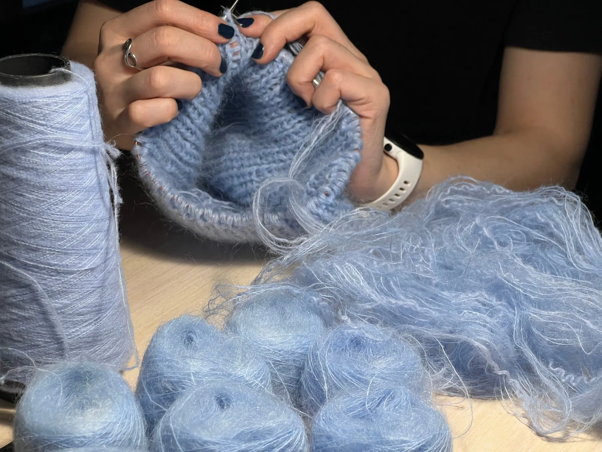
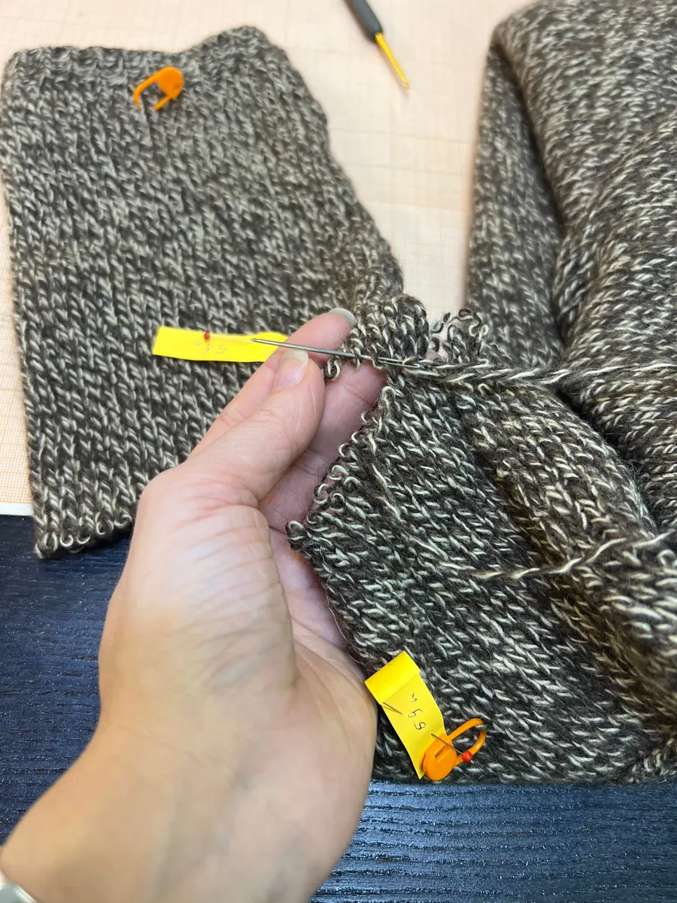
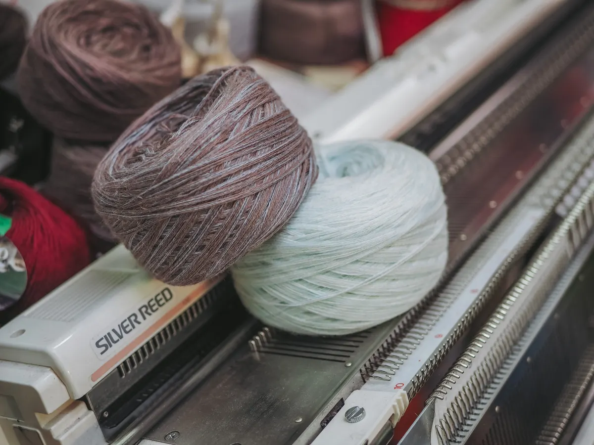
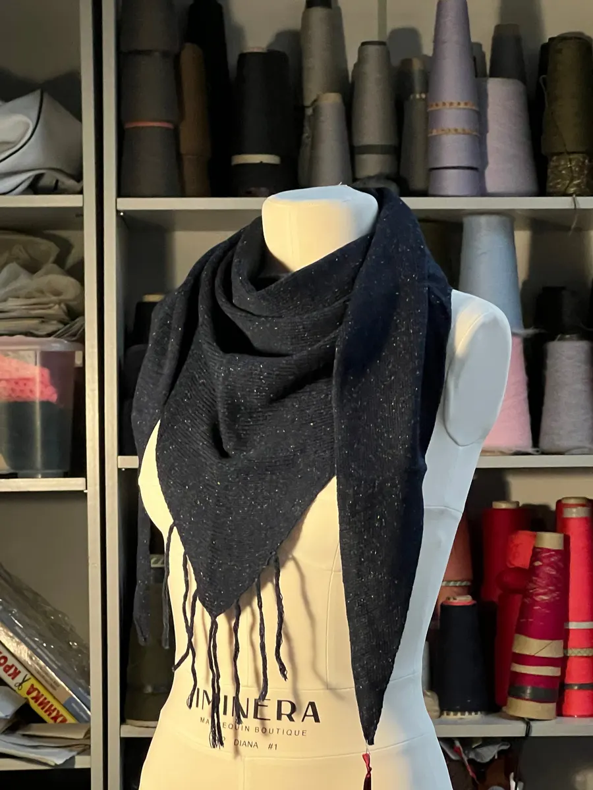

Трикотажная мастерская · ремонт, пошив, вязание
Берёмся за трикотаж, от которого отказались другие ателье Екатеринбурга
Подогнать, починить, связать по вашей задумке. Пришлите фото вещи – ответим ценой и сроком по прайсу, сложное обсудим до начала.
- Цена и срок по фото до визита
- Чиним трикотаж и тонкие ткани
- Вяжем вручную и на машине

Что входит в работу
Входит
- Оценка вещи по фото – до визита
- Мастер подберёт пряжу под вашу задумку
- Сложные случаи обсуждаем до начала
- Гарантия на работу
Отдельно, если нужно
- Пряжа и ткань при пошиве и вязании
- Сложный узор – цена по фото
- Доставка готовой вещи – уточнить
Срок и цена известны до визита
Цены и сроки – по прайсу мастерской. Срок считаем в днях с того дня, как вещь у мастера.
Подгонка
- Длина брюк или юбки3–4 дня2 200 ₽
- Длина рукава блузы, сорочки3–4 дня2 400 ₽
- Ширина блузы по боковым швам3–4 дня2 400 ₽
- Ширина брюк по боковым швам5–7 дней3 200 ₽
- Перенести вытачку, за шт.3–4 дня2 500 ₽
Ремонт трикотажа
- Низ брюк в подгибку2–3 дня2 600 ₽
- Низ юбки в подгибку2–3 дня2 600 ₽
- Заменить манжеты5–7 дней3 750 ₽
- Штопка, заплаткаот 3 днейот 1 500 ₽
- Пуговица или кнопка, за шт.2–3 дня450 ₽
Пошив трикотажа
- Футболка5–7 дней7 500 ₽
- Свитшот, лонгслив5–7 дней11 000 ₽
- Юбка без подклада3–5 дней10 000 ₽
- Платье5–7 дней18 500 ₽
Вязание на заказ
- Шапка, машинная вязка3–4 дня3 500 ₽
- Шапка, ручная вязка5–7 дней5 000 ₽
- Свитер, машинная вязка2 недели22 000 ₽
- Свитер, ручная вязка2–3 недели35 000 ₽
Пряжа и ткань для пошива и вязания оплачиваются отдельно. Цена вязания зависит от узора, штопку считаем по вещи.

Как отдать вещь в работу
- 01
Фото вещи
Присылаете фото в WhatsApp или Telegram и пару слов, что нужно.
- 02
Цена и срок
Отвечаем ценой по прайсу и сроком. Сложное обсуждаем до начала.
- 03
Вещь у мастера
Приносите на 8 Марта, 8Д, третий этаж – по предварительной записи.
- 04
Готово в срок
Забираете сами или договариваемся о доставке.
Почему несут в Valis
Берёмся за сложный трикотаж
Тонкая ткань, плиссе, джемпер, который жалко испортить.
Вяжем по картинке
Пришлите фото – свяжем шапку, свитер или платье вручную или на машине.
Своя вязальная машина
Машинная вязка быстрее ручной: шапка – 3–4 дня.
Готовые шапки
Из 100 % мериноса (Италия) – можно купить без заказа.


Отзывы с Яндекс.Карт
«Отправила мастеру только фотографию, а в ответ получила чудо. Шапка выглядит точно так, как на картинке. Качество отличное! Все так, как мне нужно! Высокопрофессиональная ручная вязка. Быстро! У Алисы просто золотые руки!»
анна с. · 30 марта 2022
«Заказала у Алисы трикотажную манишку. Заказ был выполнен с отличным качеством, в срок. Мастер сама подобрала пряжу, учла все важные нюансы. В итоге получилось модно, стильно, аккуратно, как и хотелось!»
Марина Стольникова · 6 апреля 2026
«Обратилась в ателье по поводу ремонта трикотажного джемпера- уменьшить пройму рукава и поднять линию плеча. Работа выполнена качественно и в указанные сроки, в коллективе приятная атмосфера.Благодарю.»
ирина р. · 6 апреля 2025
Отзывы с карточки на Яндекс.Картах, без правок.
Частые вопросы
Можно узнать цену, не приезжая?
Да: пришлите фото вещи в WhatsApp или Telegram и пару слов, что нужно. Ответим ценой по прайсу и сроком.
Нужна запись?
Да, мастерская работает по предварительной записи: Пн–Пт 10:00–17:00.
Свяжете вещь по моей картинке?
Да: шапку, свитер, юбку, платье, кардиган – вручную или на машине. Пряжа оплачивается отдельно, цена зависит от узора.
Где вы находитесь?
Екатеринбург, ул. 8 Марта, 8Д, третий этаж – рядом с площадью 1905 года.
Пришлите фото вещи – ответим сроком и ценой
- Адрес
- ул. 8 Марта, 8Д, этаж 3, Екатеринбург
- Часы
- Пн–Пт 10:00–17:00, Сб–Вс выходной
- Телефон
- +7 (965) 532-54-88